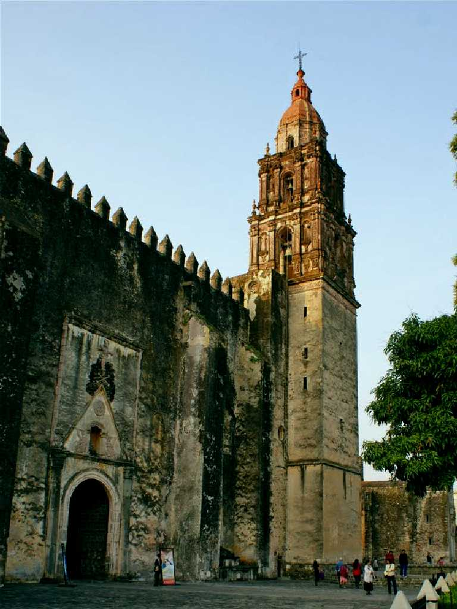
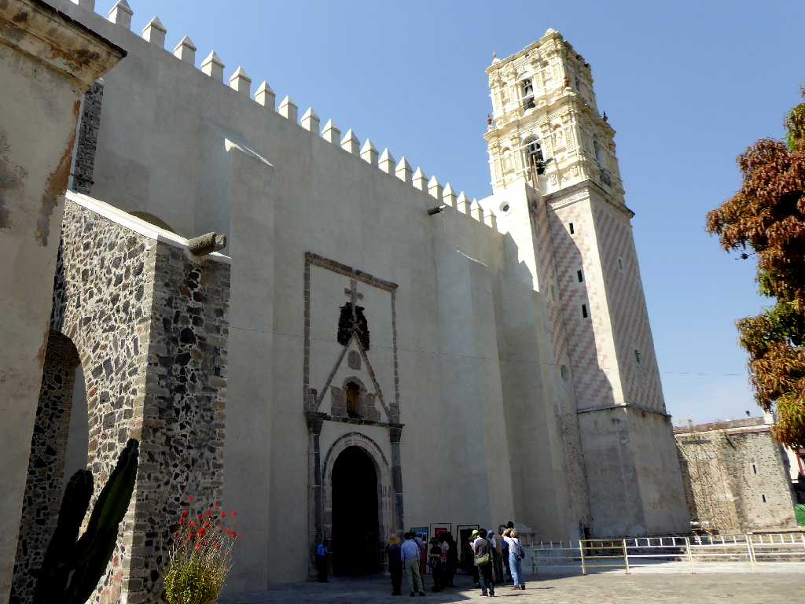
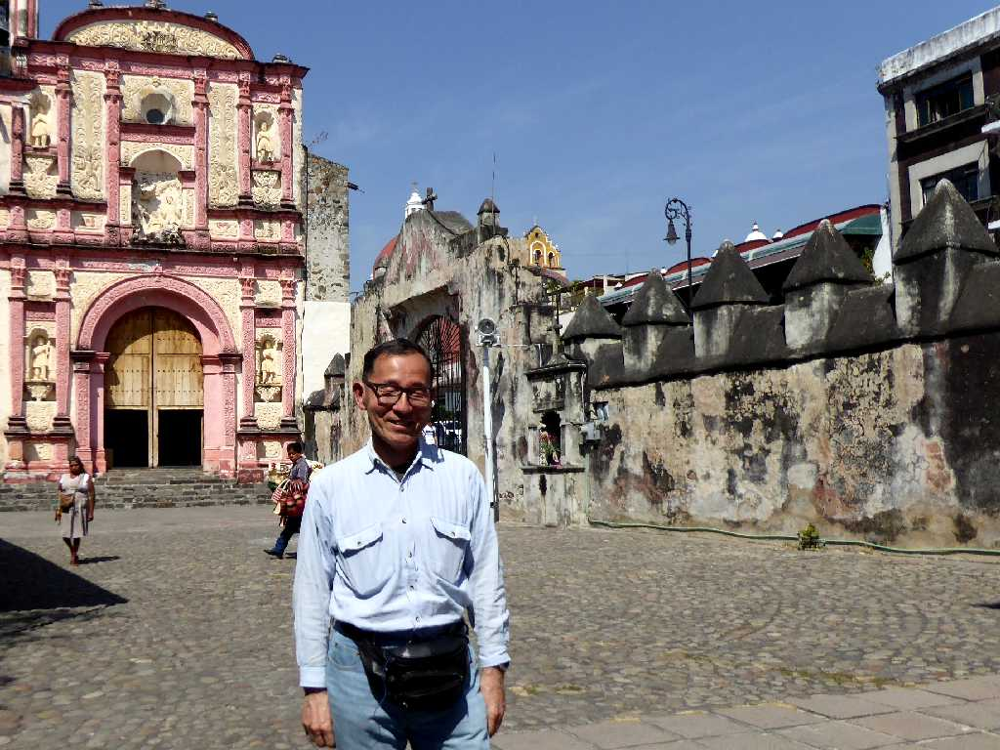
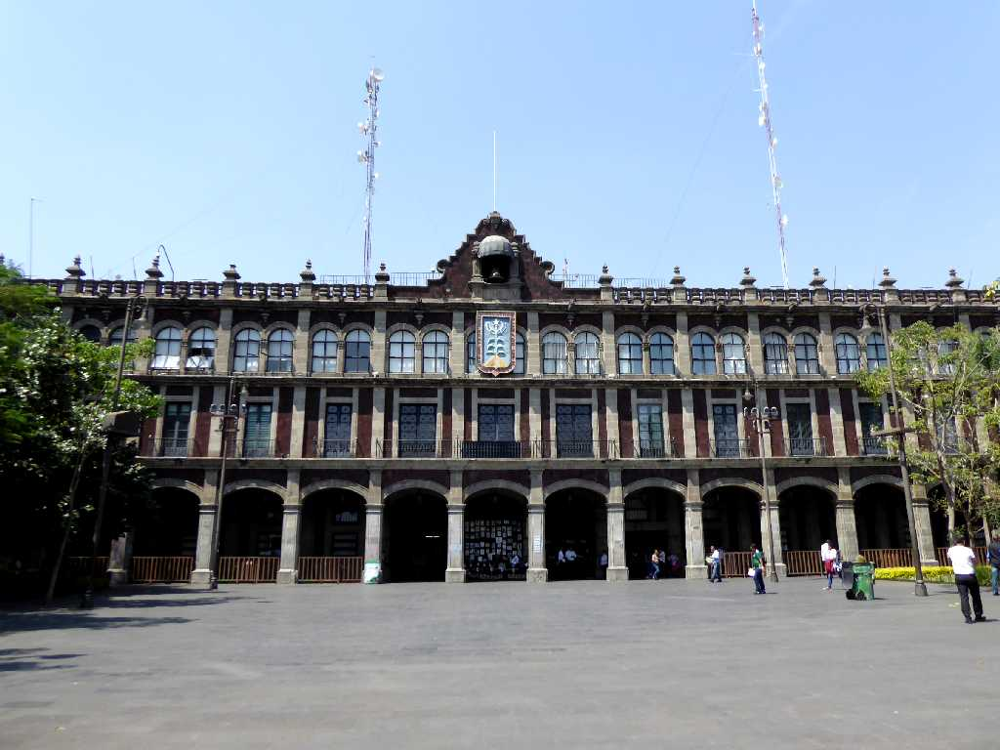

Catedral de la Asunción de María Cuernavaca
１６世紀に創られたポポカテペトル山周辺の修道院群の一つであったカトリックのクウエルナバカ聖母被昇天大聖堂 長崎２６聖人殉教壁画が残っている

Catedral de la Asunción de María
約４０年ぶりの再訪問で大聖堂の鐘楼上部が喪失していた
Mural Catedral de la Asunción de María
豊臣秀吉による長崎のキリシタン迫害を表した壁画

March 12 2020 Catedral de Cuernavaca
後方の聖堂では現在もミサなどが行われている

Palacio De Gobierno Morelos Zócalo de Cuernavaca
クエルナバカのソカロ広場に面したモレロス州庁舎宮殿